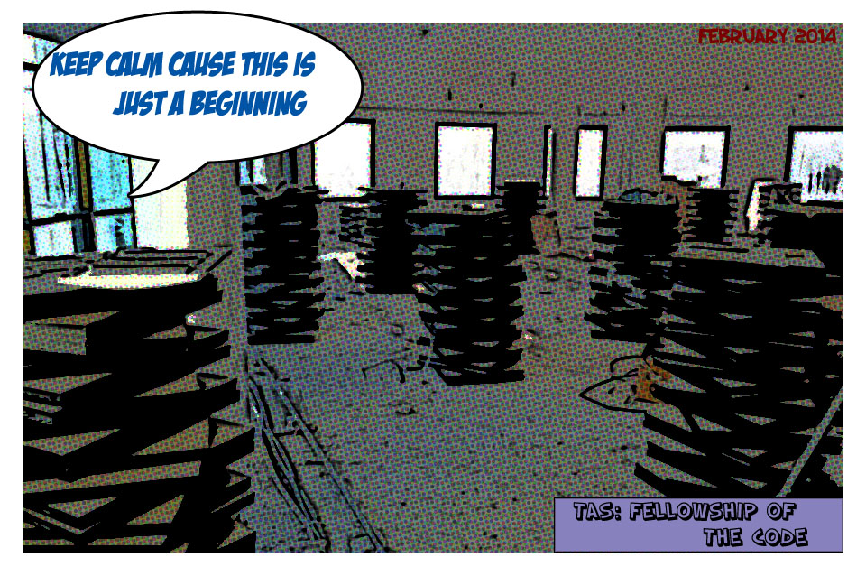
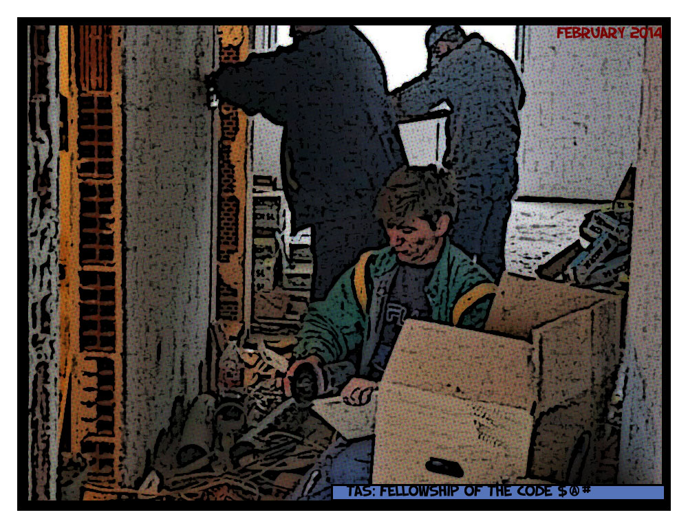
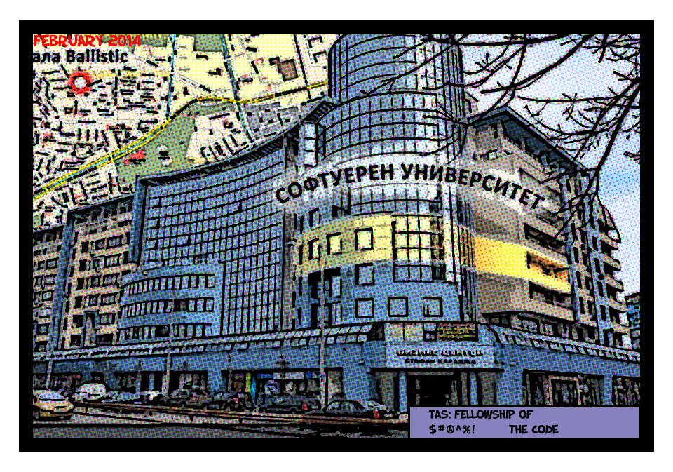
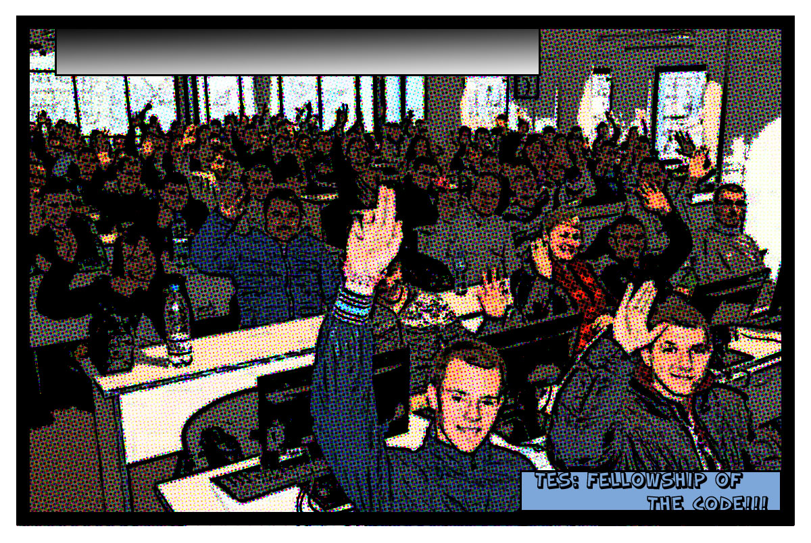
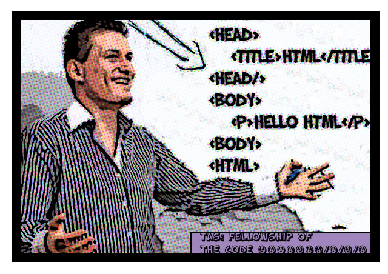

Светлин Наков бил героят, избран да поведе битката срещу злите ректори.
Той знаел много добре от какво има нужда на първо място- един истински отбор от герои има нужда от своя тайна щаб квартира !
Бързо бил повикан "Отряб за бърза сглобка на съоражения", чието мото билo "вашето местонахождение ще бъде нашата малка тайна". Те работили с невъобразима скорост и само за няколко дни , шедьовърът бил готов !
Щабквартирата била готова да посрещне бъдещите войни-програмисти, и тяхната обучение да започне моментално. Имало още нещо, което било известно само на лидерът Наков- това съоржение било построено върху останки от древна гробница на тракийски шамани, което магически предавало сили на всички , стоящи върху него.
Още в първия ден след призива за доброволци, залата била препълнена и всичко било готово да започне.
С денонощно преподаване и тренировки, младите войни напредвали със скоростта на светлината и не след дълго вече били готови за следващия етап на голямата битка.